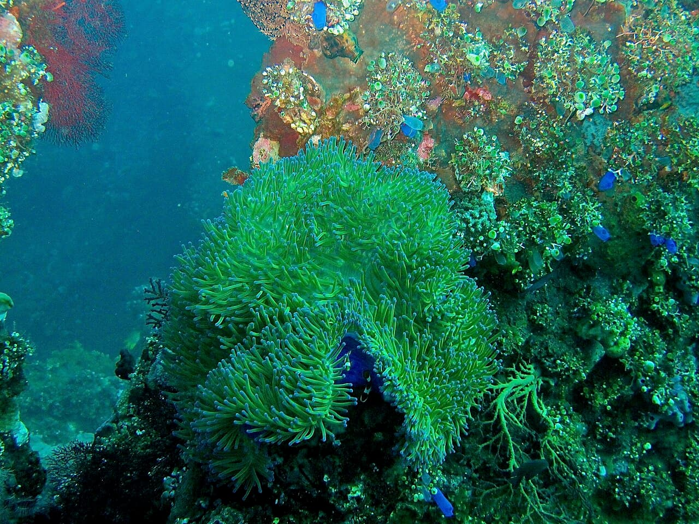

USAT Liberty — Tulamben
Bali, Indonésie · plongée, snorkeling

Épave accessible depuis la plage, posée à quelques mètres et couverte de corail : parfaite pour débuter ou faire du snorkeling.
- Lieu
- Bali, Indonésie
- Niveau
- Débutant
- Activités
- plongée, snorkeling
- Type d'eau
- Mer / océan
- Coordonnées
- -8.27, 115.59 (position approximative du secteur)
Dangers à connaître
- Entrée sur galets glissants.
- Forte affluence le matin.
Le conseil d'Ocean Buddy
Plonge tôt le matin pour éviter le monde.
Ouvrir dans Ocean Buddy Télécharger sur l'App Store
Source : Description historique Ocean Buddy · vérification externe en attente.